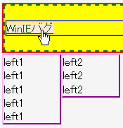
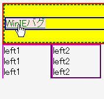

2003-05-14再作成。
以下の条件に該当するとき、アンカーにマウスポインタ等を乗せて:hover状態にすると最もボックス高が大きいフロートのうち、2番目にボックス高が大きいフロートの高さを超える部分が消える。
float:left;)が複数ある場合は最も左上方に置かれるフロート、右フロート(float:right;)が複数ある場合は最も右上方に置かれるフロート）のボックス高が最も大きい。<div style="border:2px solid red;"> <div style="background:yellow; border:2px dashed green;"> <div style="margin:20px 0; border:2px ridge blue;"> <a href="../winie.html">WinIEバグ</a> </div></div></div> <div style="float:left; width:5em; border:2px outset fuchsia;"> left1<br>left1<br>left1<br>left1<br>left1</div> <div style="float:left; width:5em; border:2px outset fuchsia;"> left2<br>left2<br>left2</div>
実際の例はページの最後にあります。アンカーにマウスポインタ等を乗せて反応を確かめてください。
マウスポインタを乗せたときのスクリーンショットです。
N7.02での表示（標準モード）
WinIE6.0での表示（標準モード）
フロートの後に、clearプロパティにnone値以外を指定した要素を置くことでバグを回避できます。